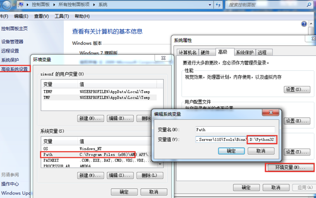

Python 环境搭建
Anaconda环境安装（强烈推荐）
强烈推荐小白使用Anaconda平台学习Python。
Anaconda提供了简化环境配置、跨平台支持、库和工具管理以及丰富的科学计算库等优势，使得小白学习Python更加便捷和高效。它是一个功能强大且易于使用的平台，可以帮助您快速入门Python编程并进行数据处理和分析。
官方免费提供在线编辑器-jupyterlab 无需手动安装环境，即可直接上手编写代码。
Python包 手动安装
你可以访问Python官网下载并安装适合你操作系统的Python版本。最好选择stable稳定版
设置环境变量
程序和可执行文件可以在许多目录，而这些路径很可能不在操作系统提供可执行文件的搜索路径中
PATH (路径)存储在环境变量中，这是由操作系统维护的一个命名的字符串,这些变量包含可用的命令行解释器和其他程序的信息
Unix 或 Windows 中路径变量为 PATH ( UNIX区分大小写，Windows 不区分大小写 )
Mac OS 中，如果安装程序过程中改变了 python 的安装路径，如果想要在其它目录引用 Python，则必须在 PATH 中添加 Python 目录
在 Windows 设置环境变量
Windows 系统中，把 Python 安装目录添加到 PATH 环境变量中流程如下
- 右键点击 计算机，然后点击 属性
- 然后点击”高级系统设置”
- 选择 系统变量 窗口下面的 Path ,双击即可！
- 然后在 Path 行，添加 python 安装路径即可，即在最后面，添加 ;
C:\Python - 设置成功以后，在
cmd命令行，输入命令 python，就可以有相关显示

Windows 下的 Python 一般安装在 C:\Python目录。
安装完成后，打开命令行（Windows）或终端（macOS/Linux），输入以下命令，确认Python已成功安装：
python --version输入python并按回车键。你将看到一条欢迎消息，其末尾
为如下提示符：
\>>>
如果情况确实如此，就可以输入Python命令了。
请尝试像下面这样做，以核实它是否管用：
\>>> print("Hello, world!")
等你按下回车键后，将出现如下输出：
Hello, world!
\>>>
如果你熟悉其他计算机语言，可能习惯了在每行末尾都加上分号。在Python中无需这样做，因为在Python中，一行就是一行。接下来，我们将学习如何编写和运行Python程序。
Visual Stuido Code安装
Visual Studio Code是一个轻量级但功能强大的源代码编辑器，在你的桌面上运行，可用于Windows、macOS和Linux。它内置了对JavaScript、TypeScript和Node.js的支持，并有一个丰富的生态系统，可用于其他语言和运行系统（如C++、C#、Java、Python、PHP、Go、.NET）的扩展。
官方有非常丰富的文档提供学习参考，第一步可以从入门视频开始
在vscode中，创建新的main.py文件后，可使用快捷键ctl+`打开终端。 输入python main.py运行 python代码